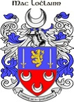

Antavla
357302352 King Ardgar MacLochlainn
Kung av Aileach. Blev ca 54 år.

Far:
Niall Sechnaill MacMaele Ruanald MacLochlainn (980 - 1023)
Född:
omkring 1010 Irland.
[1]
Död:
1064 Irland.
[1]
Barn med ?
Barn:
Domnall MacLochlainn (1048? - 1121)
Personhistoria
Årtal
Ålder
Händelse
1010?
Födelse omkring 1010 Irland
[1]
1023
Fadern
714604704 King Niall Sechnaill MacMaele Ruanald MacLochlainn
dör 1023 Irland
[2]
1048?
Sonen
178651176 King Domnall MacLochlainn
föds omkring 1048 Irland
[3]
1064
Död 1064 Irland
[1]
Källor
[1]
Björn Espell
[2]
Jan Edgar Michelsen
[3]
clan MacLochlainn (epost)